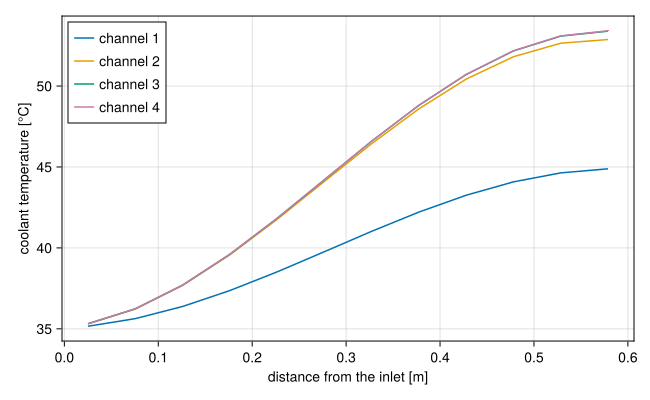
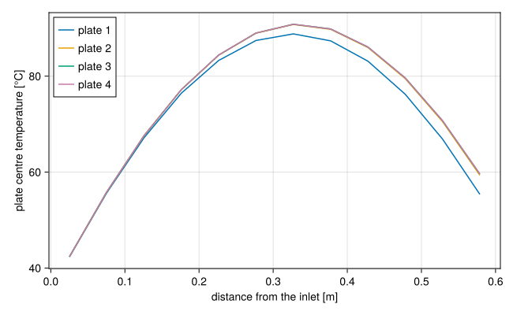
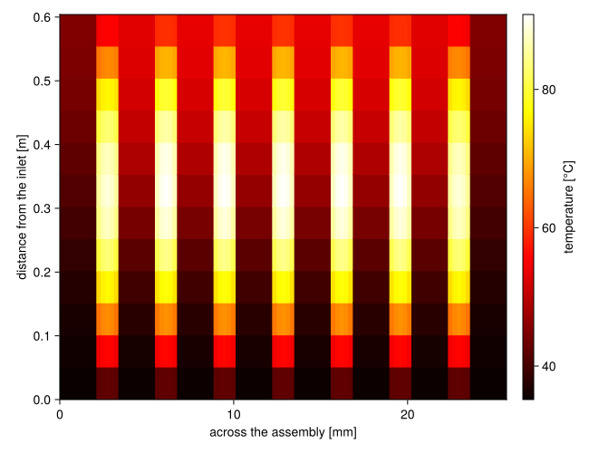
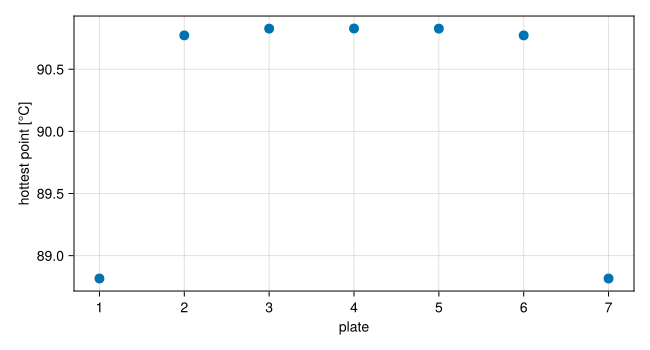

A fuel assembly of many plates
Download this tutorial as a Julia script or a Jupyter notebook.
A fuel plate between two channels modelled one plate and one channel standing for an endless stack. A real assembly ends. Its outermost channels have a fuel plate on one side only, and the plates next to them see a cooler channel on one face than on the other. This tutorial models a whole assembly: seven plates between eight channels, fed in parallel by one pump, as in Python STREAM's Multiple plates in a rod example.
Every plate is the same, and so is every channel. The dimensions and power are typical of a plate-fuel research reactor, but they describe no particular one.
using STREAMusing STREAM.Components: Pump, HeatExchanger, HeatDiffusion, ChannelAndContactsusing STREAM.Assemblies: inseries, inparallel, fuel_assemblyusing STREAM.Utilities: cosine_shapeusing ModelingToolkit: @named, mtkcompile, unknownsusing OrdinaryDiffEq: Rodas5Pusing SteadyStateDiffEq: DynamicSSn_plates = 7n_channels = n_plates + 1n = 12 # axial cellsL = 0.604 # heated length [m]gap = 0.0021 # channel gap [m]heated_width = 0.063 # width of the fuel meat [m]thickness = 0.00127 # plate thickness [m]P_plate = 15.0e6 / (24 * 7) # 15 MW over a core of 24 assemblies of 7 plates [W]T_in = 35.0 # inlet temperature [°C]p_out = 1.67e5 # pressure at the channel outlets, under the pool [Pa]dp_pump = 1.0e5 # pump head [Pa]geometry = PipeGeometry_rectangular(L, 0.0666, gap, heated_width)PipeGeometry
L 0.604 m
Dh 0.0040716 m
A 0.00013986 m^2
width 0.0666 m
depth 0.0021 m
perimeter wet 0.1374 m, heated 0.126 m
heated_parts (0.063, 0.063) mThe plates
A plate is fuel meat clad in aluminium. Across its thickness it has five cells: one of cladding on each side and three of meat between them. The power goes into the meat only, shaped as a cosine along the plate that falls to zero at its ends.
HeatDiffusion has one material for the whole plate, so the meat here conducts like the cladding. Python STREAM's example gives the two their own properties. For a plate this thin the difference is a fraction of a kelvin; see Heat conduction in a fuel plate.
n_clad, n_meat = 1, 3nx = n_meat + 2n_cladz_edges = range(0.0, L; length=n + 1)shape = zeros(n, nx)shape[:, n_clad+1:n_clad+n_meat] .= cosine_shape(z_edges, π / 2) ./ n_meatplates = [HeatDiffusion(; name=Symbol(:p, j), nz=n, nx, Lz=L, Lx=thickness, y=heated_width, rho_s=2700.0, cp_s=900.0, k_s=180.0, power=P_plate, power_shape=shape) for j in 1:n_plates];The channels
The flow goes down, so gravity is negative along the channels. Their heat transfer and friction models are the defaults, Dittus-Boelter and Blasius: the flow is turbulent and the walls stay well below saturation, as checked below.
channels = [ChannelAndContacts(; name=Symbol(:c, i), n, geometry, g=-G_EARTH) for i in 1:n_channels];The assembly
fuel_assembly alternates the channels and plates, joining each one's right face to the next one's left face, cell by cell. With one channel more than plates, both ends are channels, and their outer faces are left unconnected, which makes them adiabatic walls.
@named asm = fuel_assembly(channels, plates);One pump with a fixed head drives the flow through all eight channels in parallel, and a heat exchanger returns the water to the inlet temperature. How the flow divides between the channels is part of the answer. The pressure is fixed where the channels end, at the bottom of the core, where the pool above sets it.
channel(i) = getproperty(asm, Symbol(:c, i))@named pump = Pump(dp_pump)@named hx = HeatExchanger(T_in)connections = [ inseries(pump, hx), inparallel(hx, [channel(i) for i in 1:n_channels], pump), pump.inlet.p ~ p_out,]@named loop = assembly(connections, pump, hx, asm)sys = mtkcompile(loop)length(unknowns(sys))716The steady state
Parallel channels sharing a pump are the case Get a steady solve to converge is about: the steady solve integrates to where the model settles, starting each flow the compiled system keeps away from zero. These are the eight channel flows:
flows = filter(u -> occursin("ṁ", string(u)), unknowns(sys))foreach(println, flows)asm₊c8₊inlet₊ṁ(t)
asm₊c7₊inlet₊ṁ(t)
asm₊c6₊inlet₊ṁ(t)
asm₊c5₊inlet₊ṁ(t)
asm₊c4₊inlet₊ṁ(t)
asm₊c3₊inlet₊ṁ(t)
asm₊c2₊inlet₊ṁ(t)
asm₊c1₊inlet₊ṁ(t)guess = [ṁ => 1.0 for ṁ in flows]sol = solve_steady(sys, guess; solver=DynamicSS(Rodas5P()), abstol=1e-8, reltol=1e-8)sol.retcodeReturnCode.Success = 1All the plates' power reaches the coolant:
C(i) = getproperty(sys.asm, Symbol(:c, i))Pl(j) = getproperty(sys.asm, Symbol(:p, j))Q = sum(sol[C(i).Q_wall_total] for i in 1:n_channels)@assert isapprox(Q, n_plates * P_plate; rtol=1e-6)Q624999.999979971The assembly is symmetric about its middle, and so is the solution: channel 1 matches channel 8, plate 1 matches plate 7, and so on.
@assert all(isapprox(sol[C(i).T_out], sol[C(n_channels + 1 - i).T_out]; rtol=1e-6) for i in 1:n_channels)[round(sol[C(i).inlet.ṁ]; digits=3) for i in 1:n_channels]8-element Vector{Float64}:
1.148
1.159
1.16
1.16
1.16
1.16
1.159
1.148The flows are nearly equal. The outer channels carry about 1% less: they are cooler, so their water is more viscous and the same head pushes less of it through.
Temperatures
By symmetry, half the assembly shows all of it. Along the flow, the coolant in the outer channel warms about half as much as in the inner ones, since it is heated from one side only:
using CairoMakiezc = (z_edges[1:end-1] .+ z_edges[2:end]) ./ 2fig = Figure(size=(650, 400))ax = Axis(fig[1, 1]; xlabel="distance from the inlet [m]", ylabel="coolant temperature [°C]")for i in 1:n_channels÷2 lines!(ax, zc, sol[C(i).T]; label="channel $i")endaxislegend(ax; position=:lt)fig
The temperature at the middle of each plate, its meat:
centre = n_clad + (n_meat + 1) ÷ 2fig = Figure(size=(650, 400))ax = Axis(fig[1, 1]; xlabel="distance from the inlet [m]", ylabel="plate centre temperature [°C]")for j in 1:(n_plates+1)÷2 lines!(ax, zc, [sol[Pl(j).T[k, centre]] for k in 1:n]; label="plate $j")endaxislegend(ax; position=:lt)fig
Plate 1 runs cooler than the rest: one of its faces is cooled by the outer channel, the coolest in the assembly. The inner plates are all within a fraction of a kelvin of each other.
The whole cross-section at once, channels and plates side by side, with each plate's five cells across its thickness:
x_edges = [0.0]columns = Vector{Vector{Float64}}()for i in 1:n_channels push!(x_edges, x_edges[end] + gap) push!(columns, sol[C(i).T]) i <= n_plates || continue for m in 1:nx push!(x_edges, x_edges[end] + thickness / nx) push!(columns, [sol[Pl(i).T[k, m]] for k in 1:n]) endendfig = Figure(size=(650, 500))ax = Axis(fig[1, 1]; xlabel="across the assembly [mm]", ylabel="distance from the inlet [m]")hm = heatmap!(ax, 1000 .* x_edges, collect(z_edges), reduce(hcat, columns)'; colormap=:hot)Colorbar(fig[1, 2], hm; label="temperature [°C]")fig
The plates are the bright stripes, hottest a little past mid-height, and the dark bands between them are the channels, warming along the flow.
Finally, the hottest point of each plate:
T_max = [maximum(sol[Pl(j).T[k, m]] for k in 1:n, m in 1:nx) for j in 1:n_plates]fig = Figure(size=(650, 350))ax = Axis(fig[1, 1]; xlabel="plate", ylabel="hottest point [°C]", xticks=1:n_plates)scatter!(ax, 1:n_plates, T_max; markersize=14)fig
The two end plates are about 2 K cooler than the rest. A model of the repeating unit cell alone, as in the previous tutorial, describes the inner plates well, and the end plates conservatively.
Every wall stays far below the local saturation temperature, so the single-phase heat transfer model holds throughout. Each plate face is the right wall of the channel before it and the left wall of the channel after it:
@assert all(all(sol[C(i).T_wall_right] .< sol[C(i).T_sat]) for i in 1:n_plates)@assert all(all(sol[C(i).T_wall_left] .< sol[C(i).T_sat]) for i in 2:n_channels)(hottest_wall=maximum(maximum(sol[C(i).T_wall_right]) for i in 1:n_plates), lowest_saturation=minimum(minimum(sol[C(i).T_sat]) for i in 1:n_channels))(hottest_wall = 86.11471511360158, lowest_saturation = 107.63193599251453)What next
Reactivity insertion with feedback drives a plate's power from the reactor's kinetics, and lets the plate's temperature act back on the power.